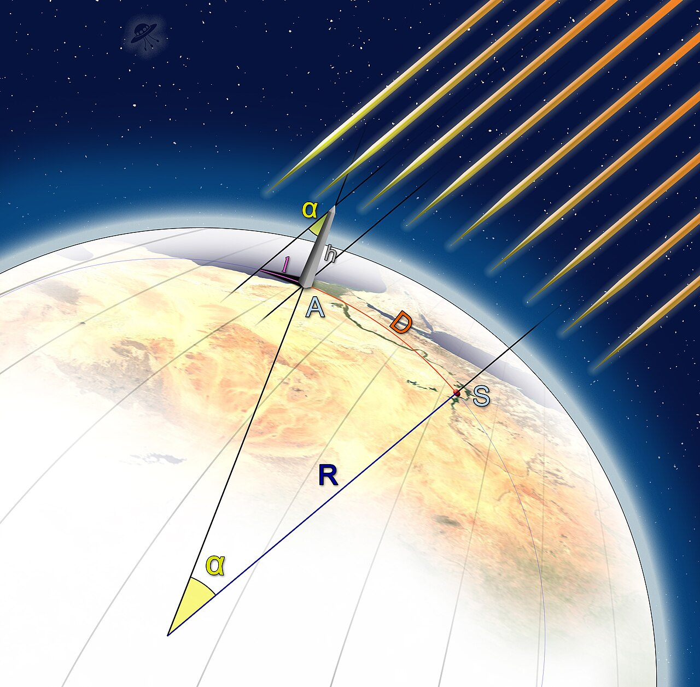

1. La misura della circonferenza terrestre (Eratostene)
Nel III secolo a.C., la storia dello studio della luce inizia con l'osservazione dei raggi solari e delle loro proprietà geometriche. Il matematico, astronomo e geografo greco Eratostene di Cirene, mentre dirigeva la celebre Biblioteca di Alessandria d'Egitto, riuscì a calcolare la circonferenza della Terra con straordinaria precisione utilizzando semplicemente un bastone e principi geometrici fondamentali. Eratostene era a conoscenza di un fenomeno unico che si verificava nella città di Siene (l'odierna Assuan): a mezzogiorno del solstizio d'estate, i raggi solari cadevano perfettamente perpendicolari al suolo, illuminando il fondo dei pozzi senza proiettare alcuna ombra.
Nello stesso momento dello stesso giorno, Eratostene misurò invece l'ombra proiettata da uno gnomone ad Alessandria, più a nord rispetto a Siene. Attraverso la misura dell'ombra e la trigonometria, determinò un'inclinazione dei raggi di circa 7,2° (un cinquantesimo di un angolo giro di 360°). Basandosi sull'assunto che la Terra fosse sferica e che i raggi del Sole viaggiassero paralleli attraverso lo spazio fino a noi, Eratostene intuì che quell'angolo corrispondeva alla porzione di circonferenza terrestre tra le due città. Moltiplicando per cinquanta la distanza nota tra Siene e Alessandria (5000 stadi), ottenne una circonferenza di circa 250.000 stadi: un valore stimato tra i 39.000 e i 40.500 chilometri, sorprendentemente vicino ai reali 40.008 chilometri del meridiano terrestre.
